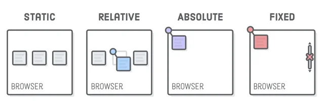

The position property in CSS determines how something (an element) is positioned on a webpage. If we think of each element on a webpage as a block, the position property allows you to get each element or block exactly where you want them to go.
Even though we’re only discussing relative, absolute and fixed positioning (there are others), it’s important to mention static positioning. Static positioning is the default for every element. Every element will start out in its static position.
Relative positioning means in relation to itself. If you set position: relative; with no other positioning attributes, it would look the same as position: static; If you do give it some other position attribute e.g. bottom 20px, the element would shift 20px up from its static position.
Absolute positioning allows you to place an element exactly where you want it. You set its location by using top, left, bottom and right positioning attributes. There is a tradeoff however, that by using absolute positioning you remove an element from the flow of elements on the page. This just means that this element won’t be affected by or affect anything else on your webpage. This can reduce the flexibility of your webpage.
An element with fixed positioning is placed in relation to the browser window itself. The position of the element won’t change when a viewer scrolls up or down a webpage but instead stays right where it is.
